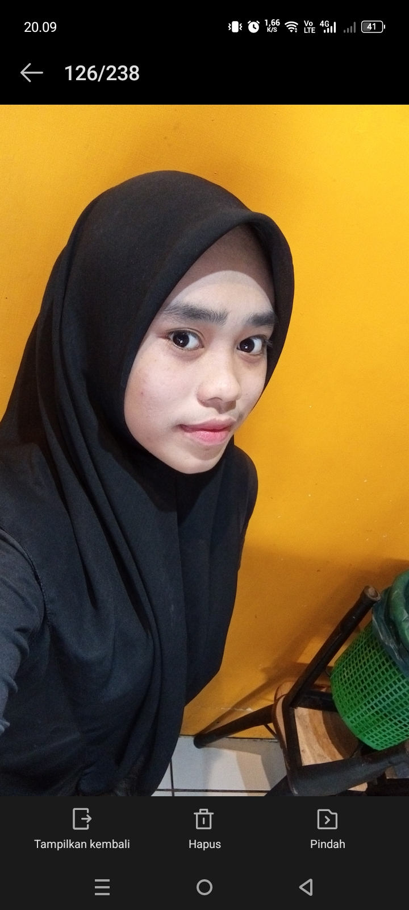

PERINGATAN

Nama Lengkap
: WIDIA
Tempat/Tgl Lahir
: -
Alamat
: ES DENGKI
Pekerjaan
: Checker Get Steak
Email
: -
Telepon
: +62 838-8238-466
Tentang Saya
saya adalah penipu (pelodes) kelas kakap,kerjaan saya melodes anak orang demi mendapatkan uang.